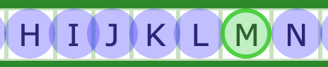

2.5.8 Target Size (Minimum) (AA)
Make sure clickable elements on a page are large enough for a user to easily select, and make sure they’re not too close together. This is because people with physical impairments sometimes cannot click or tap small buttons that are close together.
What WCAG says:
“The size of the target for pointer inputs is at least 24 by 24 CSS pixels…” (with exceptions)
Understanding 2.5.8 Target Size (Minimum)
What this means
Interactive components such as buttons and links need to be either:
- 24 pixels high and 24 pixels wide, or
- spaced far enough apart
Their centres must be both:
- at least 24 pixels away from each other, and
- 12 pixels away from every other component
There are some exceptions to these rules, including when:
- there’s an equivalent component that meets the rules elsewhere on the page
- two overlapping components do the same thing
- a component (such as a link) is in a line of text
- components (like radio buttons) have no custom formatting and use browser default styles
- more control is essential, for example on a colour picker
Why it matters
This helps people who have difficulty with fine motor movement. If components are large enough or far enough apart, it reduces the risk of people clicking or tapping the wrong component.
How to check
Some automated tools, such as Axe DevTools or Steve Faulkner’s Target Size Bookmarklet, can detect many target size failures.
If you need to test manually, you will need to measure the pixels between the centres of each element. Ways to do this include:
- inspecting the elements in your browser’s developer tools, to measure the size and margins of each component
- taking a screenshot and using an image editing tool to count pixels
How to test in detail for 2.5.8 Target Size (Minimum)
Good example
Large enough pagination links
On the GOV.UK Design System, the pagination component has numbered links next to each other.
The clickable “hit area” of each link, pictured with the blue square, is 45 pixels high and 45 pixels wide.

Common mistakes
Small links which are close together
On a set of A-Z pages, there is a row of links covering every letter of the alphabet.
When drawing a 24 pixel diameter circle at the centre of each link, there is a clear overlap between most circles, as the centres of each link are mostly under 24 pixels apart. The letter M is shown in green as it is the only link which is at least 24 pixels wide.

This could be fixed by making each link at least 24 pixels wide.
Related success criteria
To achieve AAA compliance and meet 2.5.5 Target Size (Enhanced), every component should be at least 44 pixels high and 44 pixels wide.